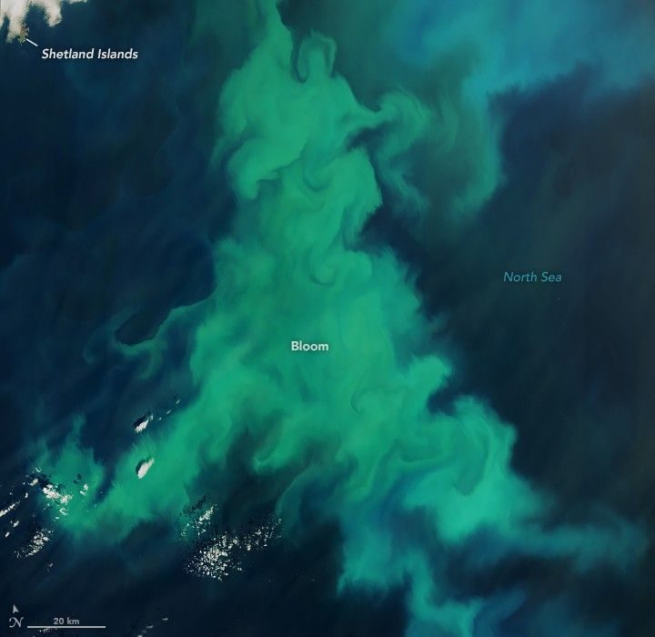

A Spectacle of Color off the Shetland Islands
In June 2025, a burst of color swirled in the North Sea as phytoplankton amassed in the waters near Scotland’s Shetland Islands. Despite their microscopic size, the plant-like organisms can become visible in satellite images when they explode in numbers, forming what is known as a phytoplankton “bloom.”
The OLI-2 (Operational Land Imager-2) on Landsat 9 captured this image on June 13, 2025. The part of the bloom shown here spanned a width of about 160 kilometers (100 miles). (A wider view of the bloom is available via NASA’s Worldview browser.)
While scientists need water samples to confirm the types of phytoplankton present, the colors in this image can provide some clues. Greener colors may indicate the presence of diatoms—a type of phytoplankton with silica shells and plenty of chlorophyll. Diatoms in this area bloom primarily in spring, though they occasionally show up in satellite images during the summer.
The bloom likely contains coccolithophores as well, notably Gephrocapsa huxleyi (previously called Emiliania huxleyi). Armored with plates of highly reflective calcium carbonate, this type of phytoplankton imparts a milky turquoise-blue appearance to the water. The effect is especially noticeable in the bluer areas at the top-right of this scene and in the wide view, where coccoliths may have drifted into deeper seawater.
G. huxleyi blooms commonly occur in the northern North Sea. On rarer occasions, they turn up in Scottish coastal waters. For instance, in summer 2021, an unusual G. huxleyi bloom sparked public interest when it turned the waters southwest of Scotland turquoise blue.